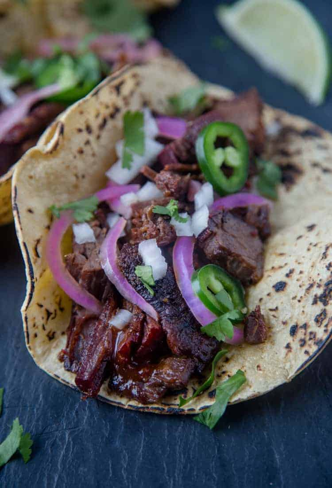

Brisket Tacos

Brisket tacos are the best combination of tex mex food you can make in texas.
This is because the flavor bomb of brisket gets absorbed by the freshness of the tortilla and salsa.
If you like crispness you can even have a well rounded crisp slice of brisket.
Ingredients
- Left over brisket meat made from your sunday grill
- Tortilla
- Salsa
- Cilantro
- Onion
Steps
- In a sauce pan heat up brisket choose moist if you want an even more crisp slice
- In another pan heat up tortilla or wait for the sauce pan tortilla absorbs the briskets leftover flavor
- Cut brisket to liking and lay meat on tortilla
- Put your cilantro, onion, and salsa on taco
- Dig in!